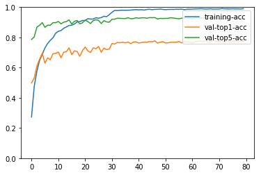

Python 3.5.2 (default, Oct 8 2019, 13:06:37)
Type "copyright", "credits" or "license" for more information.
IPython 7.5.0 -- An enhanced Interactive Python.
In [1]: runfile('/home/hp/lcx/Action-Recognition/test_model.py', wdir='/home/hp/lcx/Action-Recognition')
Load 9537 training samples.
[19:01:39] src/operator/nn/./cudnn/./cudnn_algoreg-inl.h:97: Running performance tests to find the best convolution algorithm, this can take a while... (set the environment variable MXNET_CUDNN_AUTOTUNE_DEFAULT to 0 to disable)
[Epoch 0] train=0.273042 loss=3.024521 time: 1110.521148
[Epoch 0] val top1 =0.498017 top5=0.786149 val loss=1.986276
[Epoch 1] train=0.474887 loss=1.994268 time: 771.235174
[Epoch 1] val top1 =0.531060 top5=0.803066 val loss=1.873307
[Epoch 2] train=0.576282 loss=1.539222 time: 836.526177
[Epoch 2] val top1 =0.610362 top5=0.867830 val loss=1.502920
[Epoch 3] train=0.646744 loss=1.275610 time: 897.015388
[Epoch 3] val top1 =0.655564 top5=0.880254 val loss=1.315557
[Epoch 4] train=0.687428 loss=1.094912 time: 844.227088
[Epoch 4] val top1 =0.696008 top5=0.898229 val loss=1.192962
[Epoch 5] train=0.730104 loss=0.946532 time: 797.276995
[Epoch 5] val top1 =0.629395 top5=0.866508 val loss=1.456381
[Epoch 6] train=0.759568 loss=0.855415 time: 831.852966
[Epoch 6] val top1 =0.664288 top5=0.881311 val loss=1.291952
[Epoch 7] train=0.780854 loss=0.763038 time: 946.396808
[Epoch 7] val top1 =0.651864 top5=0.880254 val loss=1.336640
[Epoch 8] train=0.797735 loss=0.709016 time: 932.026479
[Epoch 8] val top1 =0.692043 top5=0.897700 val loss=1.182203
[Epoch 9] train=0.827409 loss=0.600787 time: 902.481645
[Epoch 9] val top1 =0.694687 top5=0.897436 val loss=1.209477
[Epoch 10] train=0.840411 loss=0.554242 time: 949.557029
[Epoch 10] val top1 =0.702881 top5=0.905630 val loss=1.163246
[Epoch 11] train=0.845129 loss=0.533601 time: 873.788144
[Epoch 11] val top1 =0.665345 top5=0.889770 val loss=1.303666
[Epoch 12] train=0.860648 loss=0.479794 time: 852.120656
[Epoch 12] val top1 =0.701560 top5=0.900872 val loss=1.186138
[Epoch 13] train=0.869246 loss=0.444309 time: 834.092694
[Epoch 13] val top1 =0.706053 top5=0.904573 val loss=1.211830
[Epoch 14] train=0.878893 loss=0.423976 time: 872.832355
[Epoch 14] val top1 =0.730901 top5=0.915940 val loss=1.101839
[Epoch 15] train=0.880675 loss=0.408284 time: 920.418018
[Epoch 15] val top1 =0.685964 top5=0.888184 val loss=1.328566
[Epoch 16] train=0.888959 loss=0.386659 time: 856.169917
[Epoch 16] val top1 =0.711076 top5=0.906688 val loss=1.169083
[Epoch 17] train=0.902066 loss=0.340113 time: 857.687853
[Epoch 17] val top1 =0.707375 top5=0.911710 val loss=1.205000
[Epoch 18] train=0.904477 loss=0.341952 time: 838.181497
[Epoch 18] val top1 =0.674861 top5=0.890034 val loss=1.437694
[Epoch 19] train=0.912132 loss=0.303435 time: 829.996163
[Epoch 19] val top1 =0.712926 top5=0.896379 val loss=1.279340
[Epoch 20] train=0.911607 loss=0.306612 time: 849.867874
[Epoch 20] val top1 =0.736717 top5=0.914882 val loss=1.147203
[Epoch 21] train=0.923980 loss=0.261979 time: 902.577216
[Epoch 21] val top1 =0.710547 top5=0.904837 val loss=1.223211
[Epoch 22] train=0.921254 loss=0.266314 time: 850.409210
[Epoch 22] val top1 =0.700238 top5=0.891885 val loss=1.306953
[Epoch 23] train=0.921673 loss=0.271995 time: 821.975882
[Epoch 23] val top1 =0.730901 top5=0.911446 val loss=1.176995
[Epoch 24] train=0.930167 loss=0.237864 time: 800.764227
[Epoch 24] val top1 =0.725086 top5=0.916468 val loss=1.194599
[Epoch 25] train=0.926916 loss=0.255894 time: 810.476659
[Epoch 25] val top1 =0.740153 top5=0.913825 val loss=1.151612
[Epoch 26] train=0.931215 loss=0.237415 time: 804.131694
[Epoch 26] val top1 =0.702353 top5=0.891620 val loss=1.332840
[Epoch 27] train=0.939918 loss=0.207501 time: 772.893302
[Epoch 27] val top1 =0.729844 top5=0.911446 val loss=1.189455
[Epoch 28] train=0.937402 loss=0.224092 time: 764.370795
[Epoch 28] val top1 =0.719006 top5=0.902458 val loss=1.317059
[Epoch 29] train=0.950404 loss=0.159080 time: 765.614762
[Epoch 29] val top1 =0.723236 top5=0.900872 val loss=1.358663
[Epoch 30] train=0.966342 loss=0.111789 time: 739.622960
[Epoch 30] val top1 =0.759186 top5=0.919905 val loss=1.140993
[Epoch 31] train=0.978610 loss=0.082353 time: 725.004404
[Epoch 31] val top1 =0.756278 top5=0.920962 val loss=1.170917
[Epoch 32] train=0.977456 loss=0.073514 time: 710.417786
[Epoch 32] val top1 =0.766587 top5=0.926778 val loss=1.135308
[Epoch 33] train=0.979344 loss=0.067128 time: 724.126801
[Epoch 33] val top1 =0.764473 top5=0.926249 val loss=1.111578
[Epoch 34] train=0.980078 loss=0.070101 time: 695.826780
[Epoch 34] val top1 =0.767645 top5=0.924927 val loss=1.132741
[Epoch 35] train=0.979763 loss=0.063229 time: 668.030426
[Epoch 35] val top1 =0.764208 top5=0.924927 val loss=1.162970
[Epoch 36] train=0.979973 loss=0.064870 time: 674.177059
[Epoch 36] val top1 =0.768702 top5=0.930478 val loss=1.118914
[Epoch 37] train=0.980916 loss=0.060546 time: 671.064027
[Epoch 37] val top1 =0.758657 top5=0.923606 val loss=1.196250
[Epoch 38] train=0.983118 loss=0.055490 time: 651.689633
[Epoch 38] val top1 =0.769759 top5=0.924927 val loss=1.133792
[Epoch 39] train=0.983748 loss=0.057104 time: 638.053859
[Epoch 39] val top1 =0.770288 top5=0.930214 val loss=1.132756
[Epoch 40] train=0.982594 loss=0.052702 time: 626.970680
[Epoch 40] val top1 =0.762887 top5=0.927042 val loss=1.160336
[Epoch 41] train=0.983538 loss=0.054420 time: 617.399423
[Epoch 41] val top1 =0.766059 top5=0.929685 val loss=1.160168
[Epoch 42] train=0.981231 loss=0.058297 time: 649.786178
[Epoch 42] val top1 =0.768173 top5=0.929950 val loss=1.139531
[Epoch 43] train=0.984901 loss=0.047991 time: 612.276566
[Epoch 43] val top1 =0.767645 top5=0.927042 val loss=1.159255
[Epoch 44] train=0.986579 loss=0.047695 time: 598.544311
[Epoch 44] val top1 =0.772932 top5=0.930743 val loss=1.182437
[Epoch 45] train=0.983643 loss=0.054189 time: 579.507700
[Epoch 45] val top1 =0.770552 top5=0.930478 val loss=1.162805
[Epoch 46] train=0.985949 loss=0.044092 time: 565.522875
[Epoch 46] val top1 =0.777161 top5=0.931007 val loss=1.147054
[Epoch 47] train=0.986264 loss=0.048872 time: 571.258744
[Epoch 47] val top1 =0.762094 top5=0.922020 val loss=1.227348
[Epoch 48] train=0.987837 loss=0.044055 time: 552.490285
[Epoch 48] val top1 =0.768438 top5=0.925985 val loss=1.166009
[Epoch 49] train=0.985425 loss=0.052076 time: 538.170599
[Epoch 49] val top1 =0.771610 top5=0.925192 val loss=1.191917
[Epoch 50] train=0.984062 loss=0.052282 time: 543.906446
[Epoch 50] val top1 =0.762887 top5=0.925985 val loss=1.189929
[Epoch 51] train=0.985215 loss=0.049063 time: 534.598922
[Epoch 51] val top1 =0.764208 top5=0.926513 val loss=1.207416
[Epoch 52] train=0.985635 loss=0.047466 time: 543.728313
[Epoch 52] val top1 =0.768173 top5=0.930478 val loss=1.156601
[Epoch 53] train=0.985425 loss=0.043262 time: 524.929640
[Epoch 53] val top1 =0.768173 top5=0.927835 val loss=1.167918
[Epoch 54] train=0.986788 loss=0.046923 time: 516.103326
[Epoch 54] val top1 =0.768173 top5=0.925456 val loss=1.213040
[Epoch 55] train=0.986054 loss=0.042650 time: 514.819803
[Epoch 55] val top1 =0.773196 top5=0.923870 val loss=1.155008
[Epoch 56] train=0.987417 loss=0.041644 time: 520.545531
[Epoch 56] val top1 =0.763151 top5=0.926778 val loss=1.226625
[Epoch 57] train=0.983748 loss=0.049175 time: 518.184823
[Epoch 57] val top1 =0.772932 top5=0.929950 val loss=1.196377
[Epoch 58] train=0.986893 loss=0.041426 time: 518.143145
[Epoch 58] val top1 =0.770552 top5=0.928628 val loss=1.225267
[Epoch 59] train=0.987103 loss=0.041543 time: 519.607061
[Epoch 59] val top1 =0.768702 top5=0.928099 val loss=1.230926
[Epoch 60] train=0.987208 loss=0.039705 time: 524.091093
[Epoch 60] val top1 =0.762887 top5=0.923870 val loss=1.250302
[Epoch 61] train=0.988571 loss=0.039888 time: 523.530889
[Epoch 61] val top1 =0.772403 top5=0.928628 val loss=1.235904
[Epoch 62] train=0.988676 loss=0.040529 time: 566.500648
[Epoch 62] val top1 =0.773989 top5=0.931536 val loss=1.171927
[Epoch 63] train=0.990039 loss=0.033519 time: 593.159487
[Epoch 63] val top1 =0.776368 top5=0.928364 val loss=1.186091
[Epoch 64] train=0.989305 loss=0.039084 time: 604.446302
[Epoch 64] val top1 =0.771610 top5=0.927835 val loss=1.211090
[Epoch 65] train=0.987837 loss=0.036735 time: 601.889350
[Epoch 65] val top1 =0.778483 top5=0.928892 val loss=1.175605
[Epoch 66] train=0.988676 loss=0.039327 time: 609.308656
[Epoch 66] val top1 =0.768438 top5=0.924134 val loss=1.216897
[Epoch 67] train=0.989095 loss=0.035071 time: 600.392208
[Epoch 67] val top1 =0.773989 top5=0.927571 val loss=1.208936
[Epoch 68] train=0.987522 loss=0.040335 time: 584.571034
[Epoch 68] val top1 =0.781655 top5=0.933915 val loss=1.149270
[Epoch 69] train=0.987837 loss=0.037773 time: 533.554130
[Epoch 69] val top1 =0.769759 top5=0.927835 val loss=1.195038
[Epoch 70] train=0.988047 loss=0.040189 time: 523.671566
[Epoch 70] val top1 =0.773460 top5=0.924134 val loss=1.227421
[Epoch 71] train=0.990982 loss=0.032818 time: 515.836776
[Epoch 71] val top1 =0.770288 top5=0.922020 val loss=1.220334
[Epoch 72] train=0.988990 loss=0.034921 time: 509.236514
[Epoch 72] val top1 =0.769759 top5=0.926778 val loss=1.240034
[Epoch 73] train=0.988885 loss=0.038169 time: 508.175883
[Epoch 73] val top1 =0.778747 top5=0.929685 val loss=1.185853
[Epoch 74] train=0.988361 loss=0.039003 time: 458.518768
[Epoch 74] val top1 =0.770024 top5=0.931536 val loss=1.181487
[Epoch 75] train=0.989619 loss=0.033693 time: 322.159813
[Epoch 75] val top1 =0.774518 top5=0.930214 val loss=1.194317
[Epoch 76] train=0.988885 loss=0.035552 time: 328.118209
[Epoch 76] val top1 =0.774518 top5=0.930214 val loss=1.191080
[Epoch 77] train=0.988676 loss=0.037108 time: 325.067552
[Epoch 77] val top1 =0.772667 top5=0.929685 val loss=1.210388
[Epoch 78] train=0.988151 loss=0.039717 time: 317.641147
[Epoch 78] val top1 =0.774518 top5=0.923870 val loss=1.184326
[Epoch 79] train=0.990353 loss=0.032974 time: 323.436747
[Epoch 79] val top1 =0.772139 top5=0.927571 val loss=1.248685

In [2]: